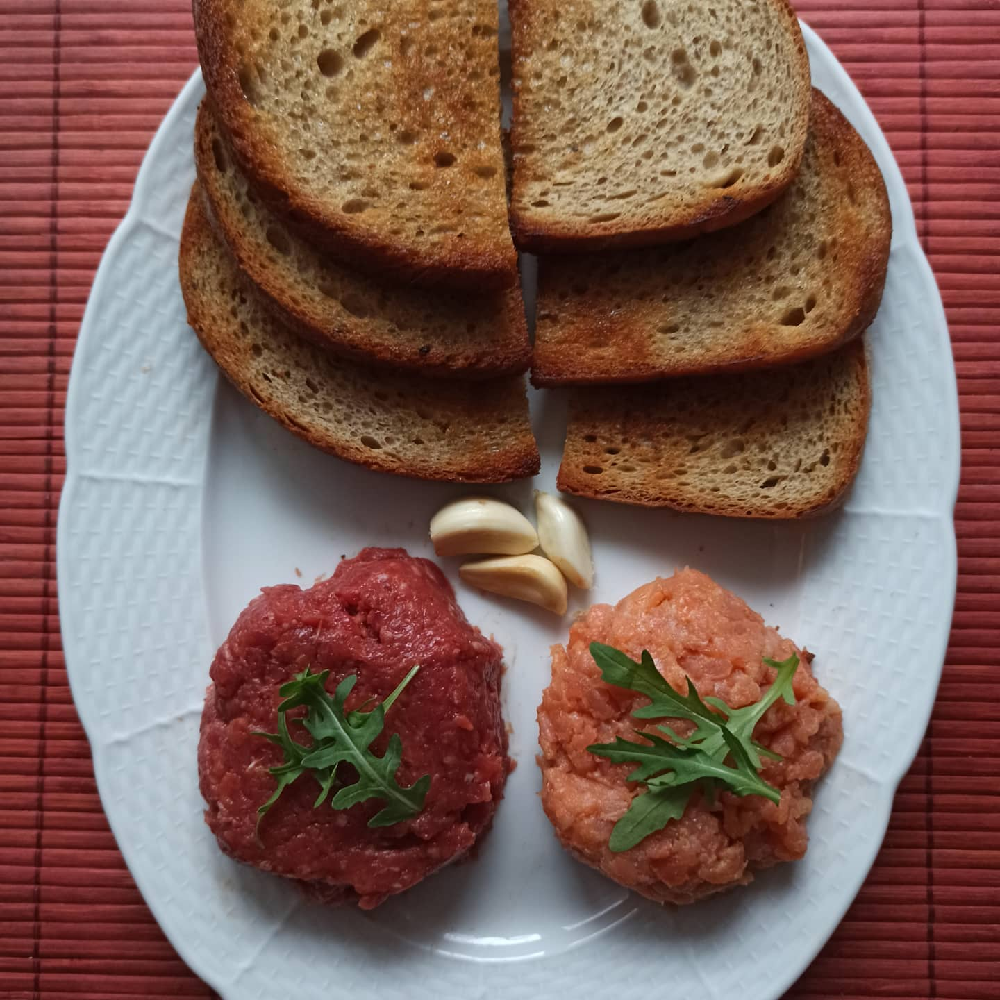

Tatársky biftek podľa @mirek6565 — Normy Jedál
Dnes vařím já - 😀😄💯👍😋🍽️❤️💙- #tataracek , #tatarakzlososa , #tatarskybiftek , #tataraček , #tatarak , #tatarák , #tataráček , #tataracekzlososa , #tataráček , #tatarákzlososa , #tatarskybiftek , #tatarskýbiftek , #varimeslaskou , #varim , #varimespolu , #vařím , #varimedoma , #varimespolecne , #vaříme , #varici , #varicimuz , #varenijehra , #vareni, #varenijehra , #varenidoma , #varenijeradost , #vaření